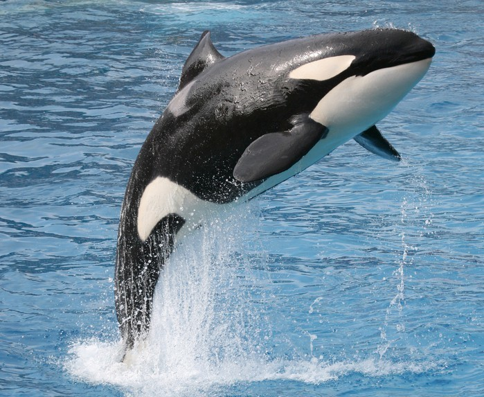
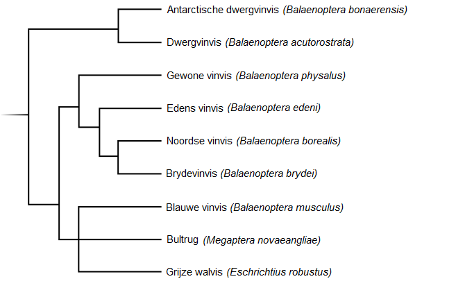

Vijanden
 Stel je bent een antilope. Je moet dan altijd op je hoede zijn, want er kan altijd een leeuw opeens op je aan het jagen zijn. Dus je moet altijd klaarstaan om weg te kunnen rennen. De blauwe vinvis is het grootste dier op aarde. Voor wie moet hij dan wegzwemmen? Eigenlijk voor niemand. Hij heeft geen vijanden. Het enige waar hij bang voor hoeft te zijn is orka's. Het gebeurt namelijk wel eens dat een groep orka's een blauwe vinvis aanvalt, maar vaak is de blauwe vinvis snel genoeg om weg te zwemmen. Vroeger moesten de blauwe vinvissen ook bang zijn voor mensen, maar nu is het jagen op blauwe vinvissen verboden, zie bedreiging.
Andere organismen
Op veel grote dieren zitten er dieren op hun huid. Zo is dat dus ook bij de blauwe vinvis. Zo zitten er bijvoorbeeld kleine eencellige organismen, kreeftachtige zoals zeepokken of walvisluizen. Veel van die organismen zitten er alleen maar en reizen gewoon met de wereld rond op de huid van de blauwe vinvis. Andere kunnen ook echt schade aanrichten op de huid. Walvisluizen kunnen veel schade aanrichten, maar van alle soorten walvisluizen komt er maar eentje voor op de huid van de blauwe vinvis. Dus heeft hij er geen last van. Oftewel de blauwe vinvis heeft wel organismen op zijn huid maar die kunnen niet zoveel schade aanrichten dat het de blauwe vinvis pijn doet.
Andere soorten
 In de tabel hier onder zie je de taxonomische rang van de blauwe vinvissen. Daarin zie je welke groepen, stammen, families en geslachten dieren vandaan komen. Zo zie je dus dat de blauwe vinvis een zoogdier is een hoort bij de walvisachtige en uiteindelijk een vinvis is. Ook zie je hier rechts een stamboom met welke vinvissen de blauwe vinvissen het meest verwant is. Dit is dus van de familie vinvissen, ook wel de Balaenopteridae. Dat betekent gevleugelde walvis. In de diagram zie je dus dat de blauwe vinvis het meest verwant is met de grijze vinvis en de bultrug.
| Taxonomische rang | Naam |
|---|---|
| Rijk | Dieren |
| Stam | Chordadieren |
| Klasse | Zoogdieren |
| Orde | Walvisachtigen |
| Onderorde | Baleinwalvissen |
| Familie | Vinvissen |
| Geslacht | Balaenoptera (Blauwe vinvis) |
Relaties onderling
De blauwe vinvis komt voor in verschillende aantallen. Je ziet ze vaak alleen, in paren of een groepje. Als je ze in paren ziet is het vaak een moeder met een kalf. In foerageergebieden komen vooral groepen voor. Ze zijn dan samen naar eten aan het zoeken. Als de dieren in de winter naar de warmere zeeen gaan dan gebeurt ook de voortplanting. Wat er gebeurt is dat meerdere mannetjes om een vrouwtje heen gaan zwemmen. Het laatste mannetje dat blijft overwint. Zijn sperma spoelt namelijk het sperma van de andere mannetjes weg, daarom zorgt de laatste mannelijke vinvis voor de bevruvchting. Het duurt ongeveer 11 maanden tot 1 jaar voordat het kalf geboren wordt. Zo worden de kalveren dus in de tropische zeeen geboren, dus in de winter. De zoogtijd van het kalf bij de moeder is kort vergeleken andere dieren. Het kalf drinkt ongeveer 370 liter melk per dag. De moeder verzorgt en beschermt het kalf in haar eentje. De vader houdt zich er niet mee bezig.
Ga terug